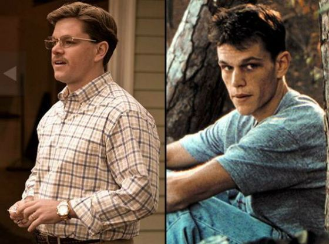

Мэтт Деймон
Биография Мэтта Деймона
Мэттью Пэйдж Дэймон – прославленный голливудский актер, наиболее известный по ролям в остросюжетной «Трилогии Оушена»
и серии фильмов про спецагента Джейсона Борна. В начале карьеры активно снимался в фильмах Кевина Смита («Догма»,
«В погоне за Эми»). Вместе с лучшим другом Беном Аффлеком актер создал выдающийся фильм «Умница Уилл Хантинг»,
взявший в 1998 году премию «Оскар» в категории «Лучший сценарий».
Детство
Два первых года своей жизни Мэтт Дэймон, родившийся в октябре 1970 года, провел в Кембридже, неподалеку от Бостона.
Его отец, Кент Тефлор Дэймон, работал на бирже, мама, Нэнси Карлссон-Пейдж, преподавала в местном университете,
а его верным товарищем по играм был старший на три года брат Кайл. Едва мальчик отметил свой второй день рождения,
его родители разошлись, и отныне Нэнси была вынуждена воспитывать детей в одиночку, хотя сыновья сохранили дружеские
отношения с отцом и его новой семьей.
Сам же Мэтт, который был весьма настойчивым и упертым малышом, в детстве об актерстве даже и не помышлял.
В 6 лет он неожиданно захотел стать баскетболистом и мучил окружающих просьбами побросать вместе с ним мяч в кольцо.
Тогда к мальчику пришел отец и сказал сыну, чтобы он не забивал свою голову ерундой, ведь в роду Дэймонов мало кто
дорастал хотя бы до 160 сантиметров, а со спортивной подготовкой дела обстояли еще хуже. После долгих увещеваний маленький
Дэймон забыл о своей мечте.
Первые роли
В свободное от учебы время Мэтт посещал курсы сценаристов, к тому же, на первом курсе ему улыбнулась удача – он получил
крохотная роль с одной репликой в романтической комедии «Мистическая пицца». На 87 минуте его герой произносил:
«Мама, хочешь моей зеленой штуки?». Затем была роль чуть больше – спортивный комментатор в драме «Поле чудес» с Кевином Костером.
После этого Дэймон воскресил было забытую мечту стать актером и поставил родителей перед фактом – он отправляется в Нью-Йорк,
чтобы попытать счастья на кастингах. Родители сообщили, что на их помощь он может не рассчитывать, и Мэтт отправился в путь
со скудными сбережениями в 200 долларов.
В 1996 году на экраны вышли два диаметрально противоположных фильма с участием Мэтта Дэймона: студенческая комедия «Блеск славы»,
которая собрала в прокате жалкие 15 тысяч долларов, и военная драма «Мужество в бою», ради участия в которой Мэтт сбросил 40 фунтов.
Однако усилия были не напрасны, ведь после премьеры критики назвали Мэтта настоящим прорывом года.

Ссылки